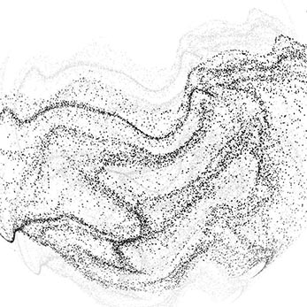

<!DOCTYPE html>
<html lang="en">
  <head>
	<meta name="generator" content="Hugo 0.74.3" />
    
    <meta name="viewport" content="width=device-width, initial-scale=1.0" />
    <meta charset="UTF-8" />

    
    <title>Jumping Rivers - Data Science Training and Consultancy</title>

    
    <link rel="stylesheet" href="/css/owl.carousel.css" />
    <link rel="stylesheet" href="/css/owl.theme.css" />
    <link rel="stylesheet" href="/css/owl.transitions.css" />
    <link rel="stylesheet" href="/css/prettyPhoto.css" />
    <link rel="stylesheet" href="/css/jquery-ui.min.css" />
    <link rel="stylesheet" href="/css/animate.css" />
    <link rel="stylesheet" href="/css/normalize.css" />
    <link rel="stylesheet" href="/css/font-awesome.min.css" />
    
    <link rel="stylesheet" href="/css/style.css" />
    <link rel="stylesheet" href="/css/responsive.css" />

    
    <link
      href="https://fonts.googleapis.com/css2?family=Lato:wght@100;300&display=swap"
      rel="stylesheet"
    />
    <link
      href="https://fonts.googleapis.com/css2?family=Lato:wght@700&display=swap"
      rel="stylesheet"
    />
    <link
      href="https://fonts.googleapis.com/css2?family=Lato:wght@400;700&display=swap"
      rel="stylesheet"
    />
    <link
      href="https://fonts.googleapis.com/css2?family=Lato:wght@400;700&family=Raleway:wght@600&display=swap"
      rel="stylesheet"
    />
  </head>
</html>
 <body>
  
  <div class="header">
    <div class="header-mid">
      <div class="header-right">
        <div class="icon">
          <a href="#"><i class="fa fa-github-alt"></i></a>
          <span>Github</span>
        </div>

        <div class="icon">
          <a href="#"><i class="fa fa-linkedin"></i></a>
          <span>LinkedIn</span>
        </div>

        <div class="icon">
          <a href="#"><i class="fa fa-twitter"></i></a>
          <span>Twitter</span>
        </div>

        <div class="icon">
          <a href="#"><i class="fa fa-youtube"></i></a>
          <span>YouTube</span>
        </div>

        <div class="icon">
          <a href="#"><i class="fa fa-rss"></i></a>
          <span>RSS</span>
        </div>
      </div>
    </div>
  </div>
  

  
  <div class="header-mid logo-up">
    <div class="logo">
      
    </div>

    <div class="menu-res">
      <a href="#"><i class="fa fa-bars"></i> MENU</a>
    </div>
  </div>

  <div class="sticky">
    <div class="header-mid">
      <div class="main-menu">
        <a href="#" class="unscrolled"
          ></a>
        <ul>
          <li class="current"><a href="#">HOME</a></li>
          <li>
            <a href="#">ABOUT<i class="fa fa-angle-down"></i></a>
            <ul>
              <li><a href="#">COMMUNITY</a></li>
            </ul>
          </li>
          <li>
            <a href="#">TRAINING <i class="fa fa-angle-down"></i></a>
            <ul>
              <li><a href="#">ALL COURSES</a></li>
              <li><a href="#">PUBLIC</a></li>
            </ul>
          </li>
          <li>
            <a href="#">CONSULTANCY <i class="fa fa-angle-down"></i></a>
            <ul>
              <li><a href="#">RSTUDIO PARTNER</a></li>
              <li><a href="#">DATA SCIENCE HEALTH CHECK</a></li>
            </ul>
          </li>
          <li><a href="#">CASE STUDIES</a></li>
          <li><a href="#">CONTACT</a></li>
          <li><a href="#">BLOG</a></li>
        </ul>
      </div>
    </div>
    <div class="bottom-border"></div>
  </div>

  
</body>


<div class="body-top">
  <div class="body-mid">
    <div class="body-top-left">
      <h3>CREATING <span>CLARITY WITH</span> <span>YOUR DATA.</span></h3>
      <h3>SAVING ORGANISATIONS LIKE YOURS THOUSANDS OF WORK HOURS</h3>
      <p>
        Jumping Rivers is an analytics company whose passion is data and machine
        learning. We help our clients move from data storage to data insights.
      </p>
      <div class="button">
        <a href="#"
          >TRAINING COURSES <i class="fa fa-angle-double-right"></i
        ></a>
        <a href="#">CONSULTANCY <i class="fa fa-angle-double-right"></i></a>
      </div>
    </div>
    <div class="body-top-right">
      
    </div>
  </div>
</div>


<div class="training">
  <div class="training-mid">
    <h1>SHAPING YOUR INSIGHT WITH DATA SOFTWARE TRAINING</h1>
    <div class="training-box">
      <div class="training-box-1">
        
        <h3>TRAINING COURSES</h3>
        <p>
          Trainers from Jumping Rivers have run over 100 programming and data
          science courses across Europe.
        </p>
        <a href="#">View all courses</a>
      </div>
      <div class="training-box-2">
        
        <h3>CONSULTANCY</h3>
        <p>
          Our consultants come with over 40 years combined experience in R,
          Python, Stan, Scala and other programming languages and range from
          lecturers and Doctors to graduates of statistics.
        </p>
        <a href="#">Discover more</a>
      </div>
      <div class="training-box-3">
        
        <h3>CASE STUDIES</h3>
        <p>
          Find out the challenges, projects and results provided in our case
          studies.
        </p>
        <a href="#">Explore our case studies</a>
      </div>
    </div>
  </div>
  <div class="traingni-mid-2">
    <div class="training-2-box">
      <div class="training-box-4">
        
        <h3>BLOG AND <span>COMMUNITY</span></h3>
        <p>
          Here at Jumping Rivers, we love data science. One of the huge benefits
          of data science is the transparency. For example, R. Being an open
          source language, it immediately is giving something back to the
          community that propels it to the top of the data science ladder.
        </p>
        <a href="#">Visit our blog</a>
      </div>
      <div class="training-box-5">
        <h3>SPECIALIST TRAINING COURSES <span>TO FIT YOUR DATA NEEDS</span></h3>
        <p>
          Our trainers and consultants come with over 40 years combined
          experience in R, Python, Stan, Scala and other programming languages.
        </p>
        <a href="#">VIEW ALL COURSES</a>
      </div>
    </div>
  </div>
</div>


<div class="francis">
  <div class="francis-mid">
    <h1>NHS Scotland</h1>
    <p>
      "Pace of delivery was just right, good mix of walked through examples and
      practical exercises. The course was clearly and methodically taught, the
      practical examples were realistic, and the tutors were friendly and
      approachable. Instructors - really friendly, helpful and patient."
    </p>
  </div>
</div>


<div class="partnaring">
  <div class="partnaring-mid">
    <h1>PARTNERING WITH</h1>
    <div class="partnaring-left">
      
      <p>
        We are experts in AI and Microsoft R technologies. As such, we are one
        of the few companies to be a <a href="#">Microsoft Preferred</a> Data &
        AI Training Partner.
      </p>
    </div>
    <div class="partnaring-right">
      
      <p>
        Jumping Rivers provides training and technical support for RStudio Shiny
        dashboards and infrastructure. As such, we work with RStudio to help our
        clients understand how R can revolutionise their data science pipeline.
      </p>
    </div>
  </div>
</div>


<div class="trust">
  <div class="trust-mid">
    <h1>TRUSTED BY</h1>
    <hr />
    <div class="slider">
      
      
      
      
      
      
      
      
      
      
      
      
    </div>
  </div>
</div>


<div class="consultancy">
  <div class="consultancy-mid">
    <div class="consultancy-left">
      <div class="left-box">
        <h1>TAILORED CONSULTANCY BESPOKE DATA SOLUTIONS</h1>
        <h3>
          Our consultants have experience in programming, business and
          analytics. We provide bespoke solutions to complex problems. Jumping
          Rivers has strong links with academia and is kept up-to-date with the
          latest techniques.
        </h3>
        <ul>
          <li>Statistics - saved 2 months of work</li>
          <li>Increased response times by 80%</li>
          <li>Sorting 90% of data into understandable structure</li>
        </ul>
        <a href="#"
          >TAILORED CONSULTANCY - FIND OUT MORE
          <i class="fa fa-angle-double-right"></i
        ></a>
      </div>
    </div>
    <div class="consultancy-right">
      
    </div>
  </div>
</div>


<div class="remote">
  <div class="remote-mid">
    <h1>REMOTE TRAINING COURSES ARE AVAILABLE ON DEMAND</h1>
    <p>
      We provide tailored remote training courses online. Designed to meet your
      business needs. Contact Jumping Rivers for more information.
    </p>
    <a href="#">ASK ABOUT REMOTE TRAINING COURSES</a>
  </div>
</div>


<div class="our">
  <div class="our-mid">
    <h1>OUR CREDENTIALS</h1>
    <p>
      Jumping Rivers has delivered quality data insights from day 1. Based in
      Newcastle and founded in 2016, the company is bringing a fresh approach to
      the world of data analytics.
    </p>
    <ul>
      <li>Authors with O'Reilly</li>
      <li>Peer-reviewed papers</li>
      <li>Live courses with O'Reilly</li>
      <li>Regular speakers at conferences across the world</li>
      <li>Partners with the Centre for Data</li>
      <li>Partners with RStudio</li>
      <li>Branded with Data Lab</li>
      <li>Active sponsors for user groups across the world</li>
      <li>Preferred Microsoft AI partners</li>
    </ul>
    <a href="#"
      >MORE ABOUT JUMPING RIVERS <i class="fa fa-angle-double-right"></i
    ></a>
  </div>
</div>


<div class="sign-up">
  <div class="sign-up-mid">
    <div class="sign-up-left">
      <h1>JOIN JUMPING RIVERS MONTHLY NEWSLETTER</h1>
      <p>
        Like data science? R? Python? Stan? Then you’d love the Jumping Rivers
        newsletter! The perks of being part of the Jumping Rivers family are:
      </p>
      <ul>
        <li>Be the first the know about the latest courses!</li>
        <li>Discounts on the latest courses!</li>
        <li>News on the latest techniques with the Jumping Rivers blog!</li>
      </ul>
      <input type="text" placeholder="Your Name" />
      <input type="text" placeholder="Your Email" />
      <input type="submit" value="SIGN UP" />
      <h4>We keep your data secure and never share your details.</h4>
    </div>
    <div class="sign-up-right">
      
    </div>
  </div>
</div>


<div class="footer-top">
	<div class="footer-top-mid">
		<ul>
			<li><a href="#">Website Terms Data and Privacy</a></li>
			<li>|</li>
			<li><a href="#">Booking Terms</a></li>
		</ul>
	</div>
</div>


<div class="footer-bottom">
	<div class="footer-bottom-mid">
		<p> &copy;2020 Jumping Rivers | Site by Bugle Agency</p>
	</div>
</div>


<div class="scrolltop">
	<i class="fa fa-angle-up"></i>
</div>


	


	<script src="/js/jquery-1.11.3.min.js"></script>
	<script src="/js/owl.carousel.min.js"></script>
	<script src="/js/jquery.prettyPhoto.js"></script>
	<script src="/js/jquery.parallax-1.1.3.js"></script>
	<script src="/js/jquery-ui.min.js"></script>
	<script src="/js/mixitup.min.js"></script>
	<script src="/js/wow.js"></script>
	<script src="/js/custom.js"></script>
	<script src="/js/cart.js"></script>
	<script src="/script.js"></script>

</body>
</html>
